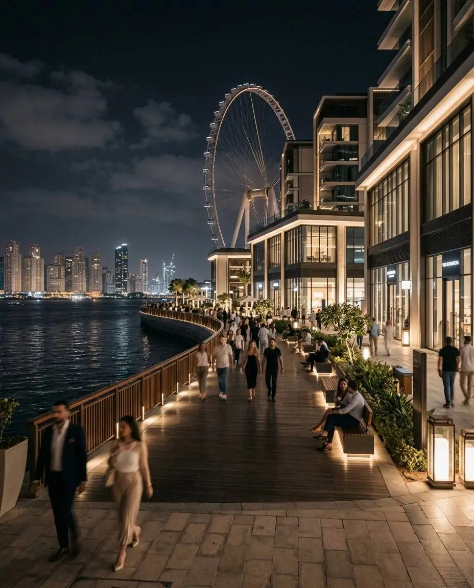

BUSINESS GUIDE
A practical guide to understanding Dubai Free Zones, business setup options, licensing considerations, and choosing the right jurisdiction for your company.
A Free Zone is a designated business jurisdiction that offers a specialized regulatory environment for companies operating in specific industries and sectors. Dubai has developed numerous Free Zones that support entrepreneurs, startups, investors, consultants, and international businesses.
Many business owners choose Free Zones because they provide streamlined company formation processes, modern infrastructure, international business environments, and access to industry-focused ecosystems designed to support growth.
One of the first decisions entrepreneurs face is whether to establish a company in a Free Zone or on the mainland. Each structure offers different advantages depending on the business model, customer base, expansion plans, and operational requirements.
Dubai is home to numerous Free Zones serving industries such as technology, media, finance, logistics, healthcare, education, manufacturing, and professional services. Entrepreneurs should research which jurisdiction best aligns with their business activities and long-term goals.
Depending on the chosen Free Zone, businesses may apply for commercial, consulting, service, trading, technology, media, or industrial licenses. Understanding permitted activities is essential before starting the application process.
Many Free Zones offer flexible workspace solutions including virtual offices, shared workspaces, private offices, and larger commercial facilities. The most appropriate option often depends on operational requirements and company size.
Business setup costs vary depending on the Free Zone, license category, office requirements, visa allocations, and additional services. Entrepreneurs should prepare a realistic budget that includes both setup expenses and ongoing operational costs.
Free Zones can be particularly attractive for consultants, technology companies, remote businesses, startups, international entrepreneurs, and organizations seeking a professional business environment with efficient administrative processes.
Choosing a business jurisdiction should support both immediate objectives and future expansion plans. Entrepreneurs should consider scalability, market access, licensing flexibility, banking requirements, and hiring needs before making a final decision.
Dubai's Free Zones continue to play a significant role in attracting entrepreneurs and international businesses. Careful research and selecting the appropriate jurisdiction can help create a strong foundation for long-term business success in the UAE.